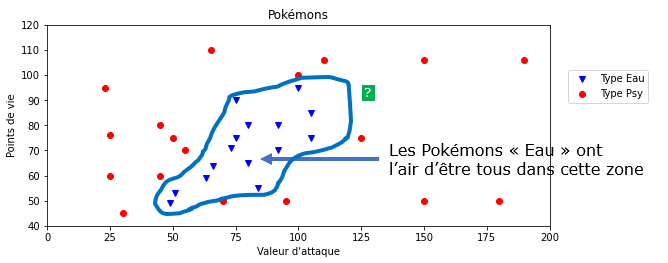

Un algorithme d'apprentissage ? d'IA ?¶
Apprentissage par coeur¶
La plupart des algorithmes d'apprentissage automatique cherchent à apprendre quelque chose du jeu de données qui lui est fourni, c'est-à-dire à remplacer les données par un modèle (une sorte de "règle" permettant de classer les données, de prendre une décision, etc.). Autrement dit, un tel algorithme tente de "comprendre" les données pour en déduire un modèle, on peut voir cela comme un apprentissage intelligent.
Pour illustrer cela de manière simplifiée, un algorithme d'apprentissage automatique intelligent chercherait par exemple, à partir des données, à délimiter deux "zones" séparant les Pokémons "Psy" des Pokémons "Eau". Il n'aurait alors plus besoin des données (des points) pour prédire la classe d'un nouvel élément car il suffirait de regarder dans quelle zone celui-ci se trouve (d'utiliser le modèle qu'il a deviné).

L'algorithme des k plus proches voisins n'a pas cette "intelligence" car il n'essaie pas de construire un modèle mais se sert des données elles-mêmes pour donner un résultat : on parle alors d'apprentissage par coeur.
Intelligence Artificielle¶
L'algorithme des k plus proches voisins est-il alors un algorithme d'intelligence artificielle ?
L'apprentissage par coeur est clairement l'apprentissage le moins intelligent mais la réponse est OUI si on considère sa capacité de prédiction : classifier un élément qu'il n'a jamais vu.
Les données et l'apprentissage automatique¶
Big data et deep learning¶
Le deep learning (ou apprentissage profond) est une famille de méthode d'apprentissage automatique. En 2012, les techniques de deep learning ont réussi à fonctionner et obtenir des résultats spectaculaires. Ces résultats ont été rendus possibles notamment par l'arrivée de données en volume massifs (big data) permettant aux algorithmes d'apprendre à résoudre un problème. Ces données en masse permettent de disposer d'une importante quantité de données sur lesquelles entrainer et affiner les algorithmes.
Les stratégies mises en place par les géants du numérique (GAFAM) tournent entièrement autour de la récolte de données de leurs clients sur n'importe quel sujet pour "nourrir" leurs algorithmes d'apprentissage. C'est ainsi qu'Amazon arrive à nous proposer des "suggestions d'achat". Google quant à lui nous utilise lorsque nous devons prouver que nous ne sommes pas un robot. En effet, qui n'a pas déjà vu un écran de ce genre ?

En cliquant aux bons endroits, on assigne une classe aux différentes parties de l'image (feu de circulation ou non) et celles-ci viennent alimenter les bases de données sur lesquelles les algorithmes s'entraînent. Ils serviront ensuite aux voitures autonomes de Google à repérer les feux tricolores sur la route.
Qualité des données et dangers¶
La qualité des données est primordiale dans l'apprentissage automatique car ce sont elles qui définissent presque entièrement la qualité des résultats des algorithmes. Voici quelques exemples, en vrac :
- Si la base de données utilisée pour entraîner un algorithme de détourage n'est constituée que de photos d'humains, il y a des fortes chances que l'algorithme ne parvienne pas à détourer un chat correctement. C'était le cas au départ pour l'algorithme du site remove.bg mais les données d'entraînement sont désormais plus complètes et les détourages fournissent des résultats impressionnants.
- L’algorithme mis en place à partir de 2015 par Amazon (source) pour faciliter le recrutement de talents utilisait des données de centaines de milliers de curriculum vitae (CV) reçus par Amazon au cours des dix dernières années en vue de noter de nouvelles candidatures. L’algorithme a été rapidement suspendu car il discriminait grandement les femmes. En effet, les CV d'entraînement comprenait une écrasante majorité d'hommes, l’algorithme ne laissant du coup aucune chance aux nouvelles candidates pourtant qualifiées. On dit dans ce cas que les données sont biaisées.
- Aux Etats-unis, ils prédisent les taux de criminalité dans les quartiers et déploient les effectifs policiers en conséquence. Mais les données sur lesquelles les systèmes sont entrainés sont également biaisés car déséquilibrés avec davantage de personnes de couleurs par exemple (voir source).
- ...
Your system is only as good as the data that you use to train it on, Kate Crawford, cofounder and co-director of AI Now